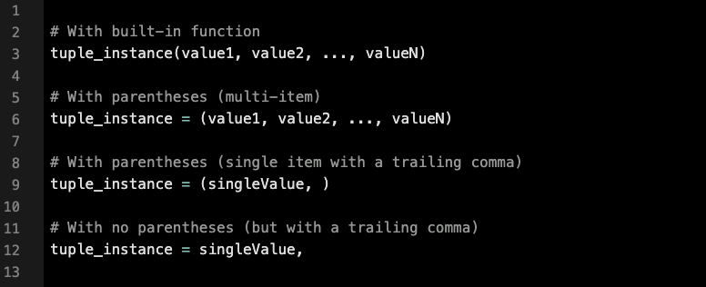
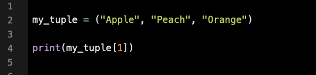
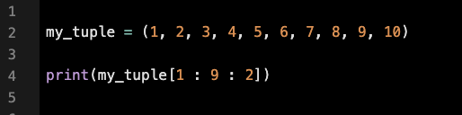
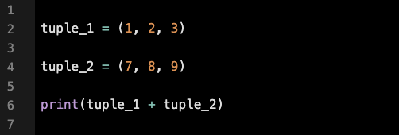

A tuple is a data structure made up of comma-separated values. Unlike dictionaries, which are unordered and mutable, tuples are immutable, and their elements maintain the order in which they were added (similar to lists). Tuple elements can be of various data types.
Tuples also support built-in sequence functions like len(), min(), and max().
There are multiple ways to create tuples in Python:
The built-in tuple() function takes an iterable value, such as a list, and returns a new tuple. Tuples
can also be created using just parentheses (or even without parentheses).
When values are assigned to a tuple, it is considered "packed." Later, when those values are accessed and
assigned to individual variables, the tuple is "unpacked."
Similar to other sequence types in Python, the elements of a tuple can be accessed using their index.
Output: (Peach)
Output: (2, 4, 6, 8)
Output: (1, 2, 3, 7, 8, 9)